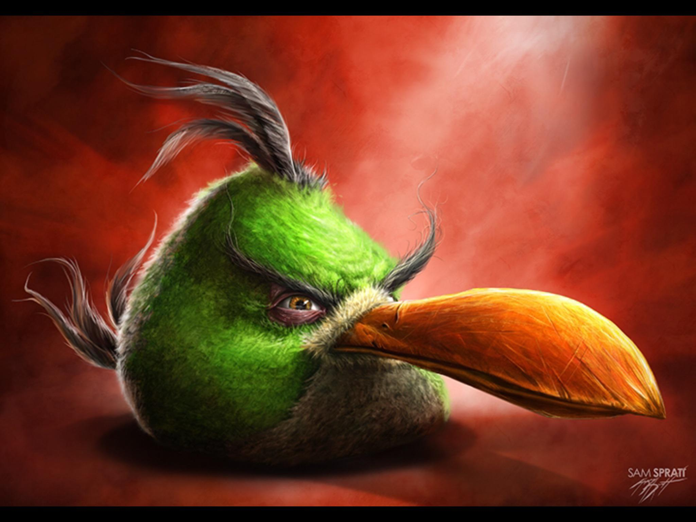

why hello there isnt this so cool to look at. I totally know what Im doing...
Main article: The Backrooms An image of a large, open room with carpet, fluorescent lights and yellow wallpaper. A gap in the wall shows similar rooms continuing beyond view. The original image used to represent The Backrooms posted on 4chan The Backrooms is a short passage originally posted to 4chan's /x/ board in 2019 as a caption to a picture of a hallway with yellow carpets and wallpaper. The story purports that by "noclip[ping] out of reality", one may enter a realm known as the Backrooms, an empty wasteland of corridors and rooms with nothing but "the stink of old moist carpet, the madness of mono-yellow, the endless background noise of fluorescent lights at maximum hum-buzz, and approximately six hundred million square miles of randomly segmented empty rooms to be trapped in",[4][5][6] as well as malevolent entities that hunt the traveler across three separate areas of the Backrooms, "Levels 0 through 2".[7] Over time, The Backrooms has been expanded into a mythos, with online writers adding information on new levels, entities, items, and phenomena within the Backrooms.[8]
Main article: Jeff the Killer An artist's depiction of Jeff the Killer Jeff the Killer is a story accompanied by an image of the title character, a teenager named Jeffrey Woods who's attacked by a group of bullies, disfigures himself and kills his family.[27] He then becomes a serial killer.[27][28] The story quickly became one of the most popular creepypastas and inspired many other stories,[27] including Jane the Killer.[29] The character of Jeff was created by DeviantArt user "sesseur", the pseudonym of Jeff Case of Auburndale, Florida.[30]

Slender Man (also called Slenderman, Slender, or Slendy) is a fictional supernatural character that originated as a creepypasta Internet meme created by Something Awful forum user Eric Knudsen (using the pseudonym Victor Surge) in 2009. He is depicted as a thin, unnaturally tall humanoid with a featureless white head and face, wearing a black suit, with branching tendrils. Stories of Slender Man commonly feature him stalking, abducting, or traumatizing people, particularly children. Slender Man has become a pop culture icon, although he is not confined to a single narrative, and appears in many disparate works of fiction online. Fiction relating to Slender Man encompasses many forms of media including literature, art and video series such as Marble Hornets (2009–2014), in which he is known as The Operator. The character has appeared in the video game Slender: The Eight Pages (2012) and its successor Slender: The Arrival (2013), as well as inspiring the Enderman enemy in Minecraft. He has also appeared in a 2015 film adaptation of Marble Hornets, where he was portrayed by Doug Jones, and an eponymous 2018 film, where he was portrayed by Javier Botet. In 2014, a moral panic occurred over Slender Man after several violent acts were connected to fans of the character, most notably a near-fatal stabbing of a 12-year-old girl in Waukesha, Wisconsin.[1] The stabbing inspired the documentary Beware the Slenderman, which was released in 2016.